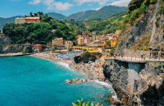
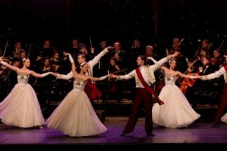
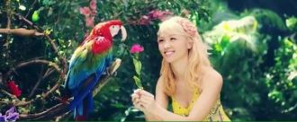
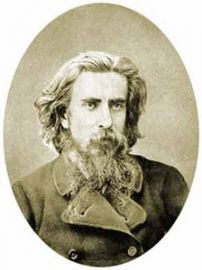
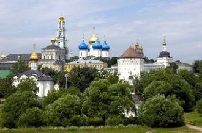

Dee Dee na na naSaturday night, I feel the airIs getting hotLike you baby
Babe, I think I love youHoney, should I tell you?should I tell you?What else could I doMaybe I am crazyMaybe I am crazy, but I want you
Найти и не разминутьсяСвою и только свою. Ни разу не обманутьсяУ пропасти на краю. И в сердце тихо на ощупьИскать тепло в пустоте.
Pretty pretty, prettiest girlPretty pretty, prettiest girl…
ソワソワしながら現れた君は yea「あの子は誰なの？」って oh noみんなが話してた噂のGirl
Serenata quasi a mezzanotteguardie e ladri che si fanno a bottee i ragazzi da solisono ancora romantici.Serenata per i separati

Un gatto bianco con gli occhi bluun vecchio vaso sulla TVNell'aria il fumo delle candeledue guance rosse rosse come mele.

Du pont des supplicesTombent les actricesEt dans leurs yeux chromésLe destin s’est brouillé
Voglio un amore che sappia di tecon quel gusto un po' amaro di un vino da rèun ricordo che sciolga i ricordi che ho

オオオオオー
ダメだったうまくいかないそんなことばかりよね
それでもね進すすんでいくのちゃんと前まえを向むいて
間違まちがえることでやっと分わかることだってあるから
I sung a melody the other dayI was humming to myself, “Man I wish you were my girlfriend”And I was hoping you would come my way
Sing Hallelujah!A B C is like 1 2 3The beatThe rhythmThe bass Y'allCome onHappy people come onJam with meOh Lord
Χορωδία:Θέλω πολύ να ξαναζήσω καλοκαιρινές στιγμέςΟ ήλιος μου θέλω να γίνεις, λάδι στο κορμί να καιςΚαι σε χαμένες παραλίες, ζήτησε μου όσα θες
В самом центре Руси, вдалеке от пространства медийного,О столичной судьбе шесть веков не пытаясь гадать,Золотых куполов, белокаменных храмов Владимира
Светлоликая жрица искусства дворянских кровей,Чей сияющий образ и в толще времён не померкнет.Сколько сложено песен на добрую память о ней,
Купола золотые устремились в высокое небо,Колокольня Ивана Великого царствует важно,Вырастают зубцами крепостные могучие стены,
Словно в сумрак эпох прокрутилась времён кинолента,Но сегодняшним днём этот образ едва ли вчерашен.Над холмами встаёт стародавняя крепость Дербента,
Платон сказал: первичен мир идей,В них - знание, а прочее - лишь мненья,Что обольщают мир неясной теньюВ привычной перемене дольних дней.

Патриархально строг, в своих чертахСуров - почти сошедший с древней фрески,Прозрений исторических размахДарил в словах и сумрачных, и резких.
Наставник Македонского царя,Учивший Александра стоицизму,Стремившийся рукой поводыряВоенной страсти усмирить харизму,

Свято-Троицкая Сергиева лавра,Купола в небесной нежатся купели.Ты для русского паломника желанна,Над тобой и птицы ангелами пели.